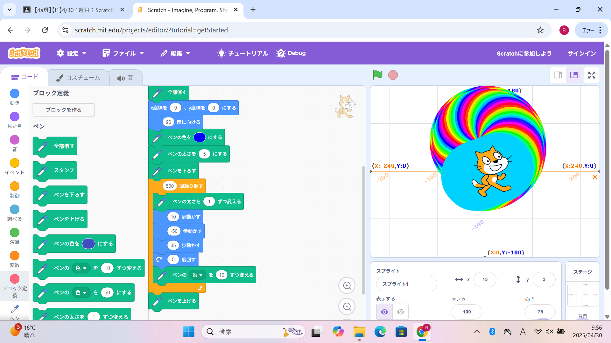
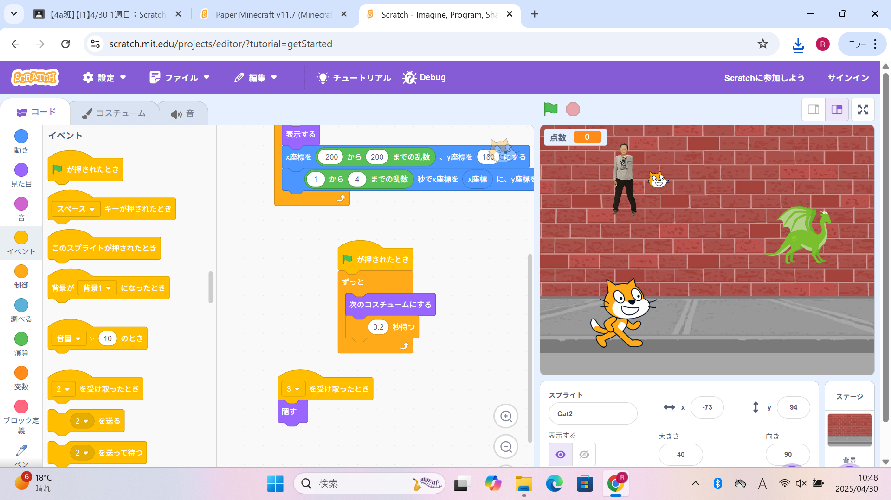

1週目のレポート ： 公大高専１年実習I-1
4a班15番 Eiji
第1週目
1-1 サイエンスアート

1.内容
Scratchを使い、キャラクターを移動させるプログラムや移動に合わせて線を引き、図形を描くプログラム、書くたびに線の色を変えるプログラムなどを作成した。
2.感想
Scratchを使うことが少なく、はじめはプログラムの作り方がよく分からなかったが、
作成していくにつれて、１つ１つのプログラムの意味を理解することができた。
1-2 ゲーム

1.内容
Scratchを使い、キャラクターを矢印キーで操作するプログラムや落ちてくるスプライトに触れると点数が増えるプログラムなどを作成し、ゲームを作った。
2.感想
サイエンスアートとは違う、キャラクターを動かしたり音を鳴らしたりするプログラムを作り、１つ１つのプログラムの意味をより深く理解することができた。
また、理解するにつれて自分で考えたことをプログラムにすることができるようになった。
1-3 ホームページ作成
私のホームページ
1.内容
自分のwebを作って、自分のホームページを作成した。ホームページの中には自分の特徴・特技、趣味・嗜好などを書いた。
2.感想
作成するページを見たときはとても複雑で難しそうだなと感じたが、実際に作成してみるととても簡単で編集しやすかった。
また、初めての作業で戸惑う部分もあったが、うまくできるととても達成感があった。
各ページへのリンク
1週目のレポート
2週目のレポート
3週目のレポート
私のホームページ